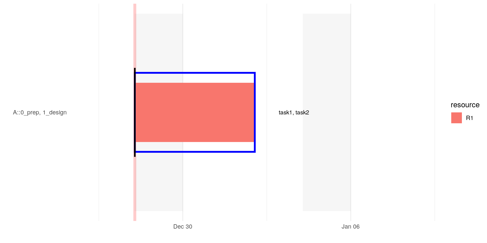
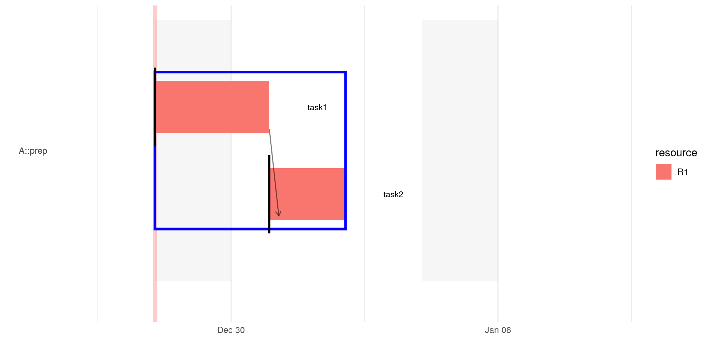
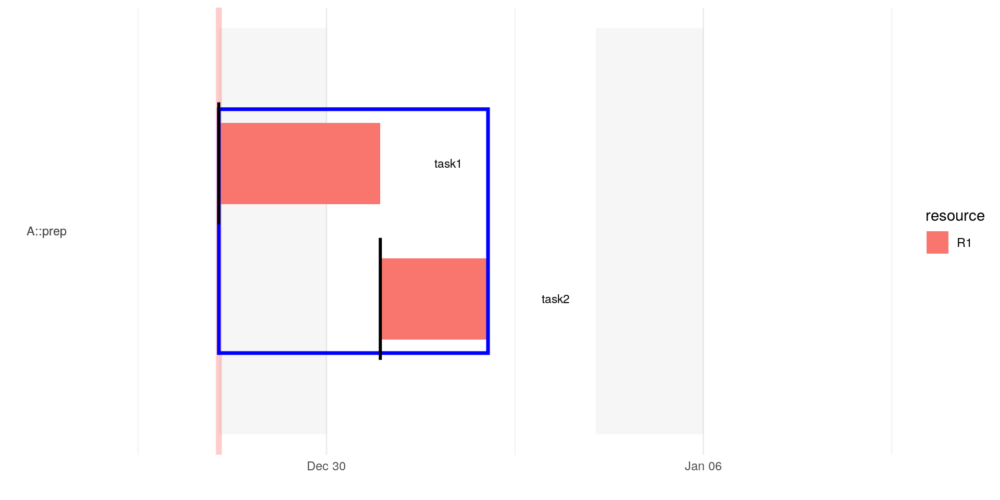
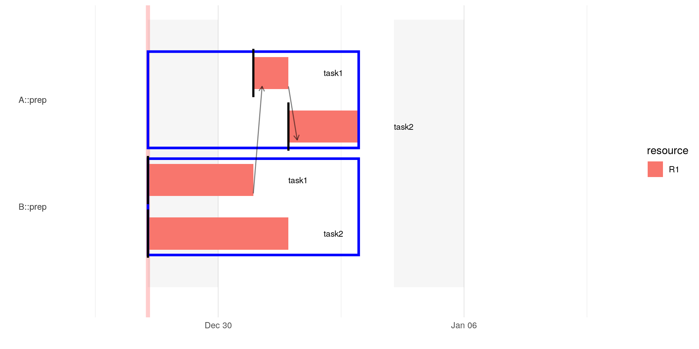

id_and_dependencies.RmdThe columns id is used to identify tasks in the work plan. It is not necessary to specify the id but this allows to declare dependencies between tasks. There can be logic dependencies where a task cannot start if another has not been finished, for instance first comes the fundament, then the walls and then the roof. Other tasks may need to be executed sequentially simply because because there are not enough resources. For illustration purpose, we will create very small project plans, that focus on the corresponding aspect under considerations.
The intrinsic property of an id is that it is unique. Note, if id is not provided, then entries of the form NOT_SPECIFIED_#some_digit# are generated automatically. One should avoid to use those entries to specify dependencies because it is very likely that the automatically generated digit-suffix will change. Internally, the id-entry is combined with the project name. Therefore, if the same id is used in different projects it is unique. However, especially at the beginning of a project when the plan is growing it could be handy to have one id for more than one tasks. Using the same id within the same section is possible. If this happens, then the corresponding rows are combined together into one entry, i.e.:
Note that using the same id in different sections results in a warning
pA %>%
projectPlan::wrangle_raw_plan() %>%
projectPlan::calculate_time_lines() %>%
projectPlan::gantt_by_sections()
#> WARN -- 2019-12-28 09:25:32 -- projectPlan/h.log_rows(df_copy, df_copy$id %in% id_in_multiple_sections, : The same id -i1- used in different 'sections' of the same 'project' is probably an error (change logging-threshold to INFO to see all columns)
#> WARN -- 2019-12-28 09:25:32 -- projectPlan/ warn_msg = glue::glue("The same id -{h.comma_list(id_in_multiple_sections)}- used in different 'sections' of the same 'project' is probably an error")): The same id -i1- used in different 'sections' of the same 'project' is probably an error (change logging-threshold to INFO to see all columns)
#> WARN -- 2019-12-28 09:25:32 -- projectPlan/h.exclude_weekends(earliest_start_time, end): start 2019-12-28 is on a weekend. Shift end 2019-12-31 by 2 day(s).
Logic dependency, e.g. first walls then roof, can be specified using the depends_on column. Note that task2 has no start-entry this is important because if the start-entry is set, then this is considered as the start date of that task, irrespective of its dependency.
In order to see this logic dependency (arrow from one task to another) one has to set the parameter show_dependencies to TRUE:
pA %>%
projectPlan::wrangle_raw_plan() %>%
projectPlan::calculate_time_lines() %>%
projectPlan::gantt_by_sections(show_dependencies = TRUE)
#> WARN -- 2019-12-28 09:25:33 -- projectPlan/h.exclude_weekends(earliest_start_time, end): start 2019-12-28 is on a weekend. Shift end 2019-12-29 by 2 day(s).
Instead of stating the dependcy directly one could simply use the term PREVIOUS.
However, if one inserts a new task between task1 and task2, then of course task2 depends on the new task and not anymore on task1.
If a task should start after some other tasks one can use the start-column and simply enter the id after which the current task should be positioned:
In this case the gantt chart do not show an an arrow even if the parameter show_dependencies is set to TRUE:
pA %>%
projectPlan::wrangle_raw_plan() %>%
projectPlan::calculate_time_lines() %>%
projectPlan::gantt_by_sections(show_dependencies = TRUE)
#> WARN -- 2019-12-28 09:25:35 -- projectPlan/h.exclude_weekends(earliest_start_time, end): start 2019-12-28 is on a weekend. Shift end 2019-12-29 by 2 day(s).
Again, instead of stating the dependcy directly one could simply use the term PREVIOUS.
As stated at the beginning, internally, the id is combined with the project name. For instance, id = i1 in project A is internally stored as A::i1. This is also the reason why id = i1 can be used in project A and B at the same time without any conflicts. In order to define that a task depends on another task of a different project one has to specify the ‘whole’ id, that is projectname::id.
Again, note that start is not specified for tasks that depend on other tasks, otherwise the entry in start would override the start date that is implicitly defined by the dependencies.
#> WARN -- 2019-12-28 09:25:36 -- projectPlan/h.exclude_weekends(earliest_start_time, end): start 2019-12-28 is on a weekend. Shift end 2019-12-29 by 2 day(s).
#> WARN -- 2019-12-28 09:25:36 -- projectPlan/h.exclude_weekends(earliest_start_time, end): start 2019-12-28 is on a weekend. Shift end 2019-12-30 by 2 day(s).